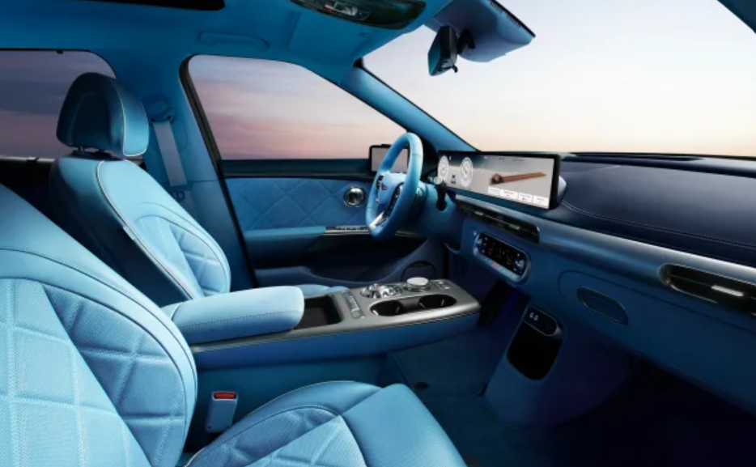

Nate Swanner . Jan 16, 2025
The 2025 Genesis GV60, first announced late last year, has received a subtle facelift that should give it a more aggressive look than its previous model year sibling. However, the more significant tweaks come when you slide into the cabin, where a larger screen sweeps across the dashboard, imbuing further luxury into an already plush interior.
What’s new for the GV60?
The GV60's exterior features a slightly reshaped grill and a subtly redesigned bumper, which make it appear sportier and a touch more aggressive. The rear bumper has ditched its silver trim, and the wheel wells are no longer black plastic. Instead, both the rear bumper and wheel well trim are color-coded to the main body color.
The twin headlamps on either side of the GV60 have also been upgraded to use Micro Lens Array (MLA) technology.

Inside, the GV60 introduces the same dashboard-filling display as its Hyundai and Kia brethren. Where the older model had two 12.3-inch displays—one for the driver and one for infotainment—the updated GV60 adds a wide 27-inch screen that sweeps across the driver-side dash and halfway across the full dashboard.
Drivers will be met with a three-spoke steering wheel, too, further inviting you to appreciate the GV60 as a sporty SUV rather than a stately daily driver.
Genesis is clearly feeling adventurous this year, injecting a jolt of electric blue into the interior options! It's a bold move, and we're here for it. While it might share a hue with some of its Kia cousins, this vibrant blue gives the cabin a fun, unexpected personality. It's not your typical luxury car palette, and that's precisely what makes it cool.
When can you buy the ‘new’ GV60?
Genesis plans to update the GV60 in Korea in Q1 and begin releasing the new-look model to the rest of the world in Q2 and beyond.
The automaker has yet to announce a release date or even a timeframe, and dealers rarely have much of a heads-up on when new vehicles will land on their lots. We’ll speculate the first batch of updated GV60s will arrive in late April or early May.
Final thoughts
Genesis seems to have tweaked its styling ever so slightly to encourage you to consider it a sportier take on a “premium” vehicle, but there’s still a missing piece: performance.
Sister vehicles from Hyundai and Kia have 576 horsepower and 641 horsepower variants, respectively, but the Genesis GV60 tops out at 483 horsepower with a speed boost option. That’s plenty of oomph, but why not up the ante on horsepower, too?
There is also no word on whether the GV60 is being updated with new, larger battery packs, as we've seen on some other Hyundai and Kia models.
Overall, there’s plenty to like about the GV60; this just isn’t as significant of an upgrade as we’d hoped. However, it is at least a welcome sight that Hyundai is continuing to use and develop the design elements that make its models stand out from others in its class.